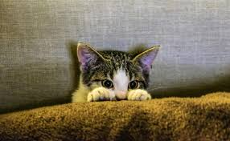
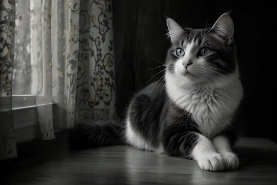

Welcome to I am Cat Blog, where we share daily stories of our
beloved feline friends. Discover the unique personalities of Leo,
Bella, and Lucy, as they brighten our days with their charm and
quirks.
"Cats are independent yet affectionate creatures. Each day, they
surprise us with their unique antics and captivating presence."
Show Stores
Daily Story

Meet Leo, our daily star!
Leo
Nov 12
Leo peeks out with curious eyes, as if he's about to pounce on a
hidden treasure. This playful kitty is always on the lookout for a
new adventure, keeping us entertained with his mischievous charm.
Daily Story
Meet Bella, our daily star!
Bella
Nov 11
Bella looks gracefully out the window, lost in thought. Her serene
posture and thoughtful gaze make her the epitome of feline elegance,
capturing the calm beauty of a quiet moment.
Daily Story

Meet Lucy, our daily star!
Lucy
Nov 9
Lucy lounges by the window, observing the world with her intense
gaze. Her fluffy coat and poised demeanor showcase her regal
presence, making every moment a perfect picture.